Меню на день из того, что есть дома, дела, календарь тренировок и созвездия. Всё самое нужное — на этой странице.
← Вернуться в приложениеВнизу экрана — панель с шестью разделами:
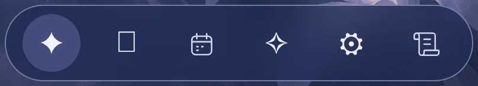
Вверху справа — кнопка смены дневного и ночного вида:
Начни с этого блока — по нему подбирается всё меню. Впиши продукт и нажми ＋ (или Enter). Подсказки появляются по мере ввода.
После каждого изменения меню пересобирается само.
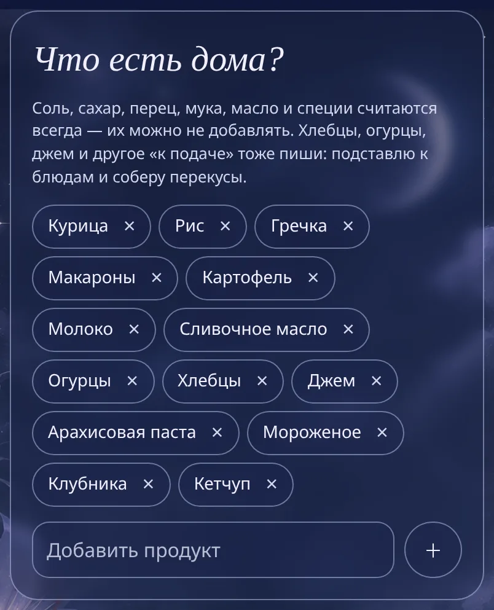
Нажми на название блюда — откроется рецепт:
Кнопки + ↻ × ☆ остаются справа от названия и в раскрытой карточке.
Нажми на название ещё раз, чтобы свернуть.
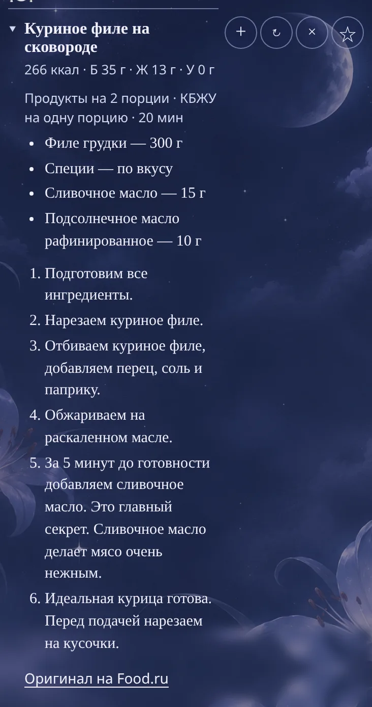
На обед и ужин приложение сначала ищет блюдо с мясом, курицей или рыбой. Если в нём нет крупы или картошки, ниже появляется отдельный гарнир.
У основного блюда и у гарнира — свои кнопки + ↻ × ☆: можно поменять только гарнир, оставив курицу, или наоборот, отметить съеденным или сохранить что-то одно.
На обед в первую очередь предлагается суп.
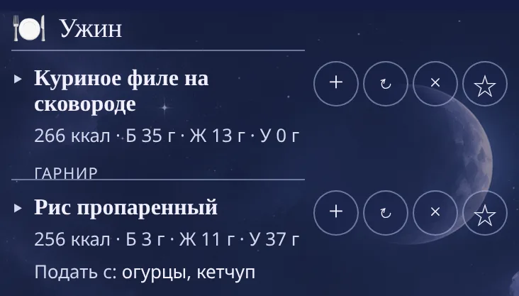
Из того, что едят «как есть», приложение собирает перекусы: «Хлебцы + арахисовая паста + варенье», «Мороженое + клубника», «Нут + ягоды». Они появляются на полдник, а с хлебцами — и на завтрак.
КБЖУ у них примерное (знак ≈) — по обычной порции каждого продукта.
Перекусы чередуются с рецептами: мороженое не будет выпадать каждый раз.
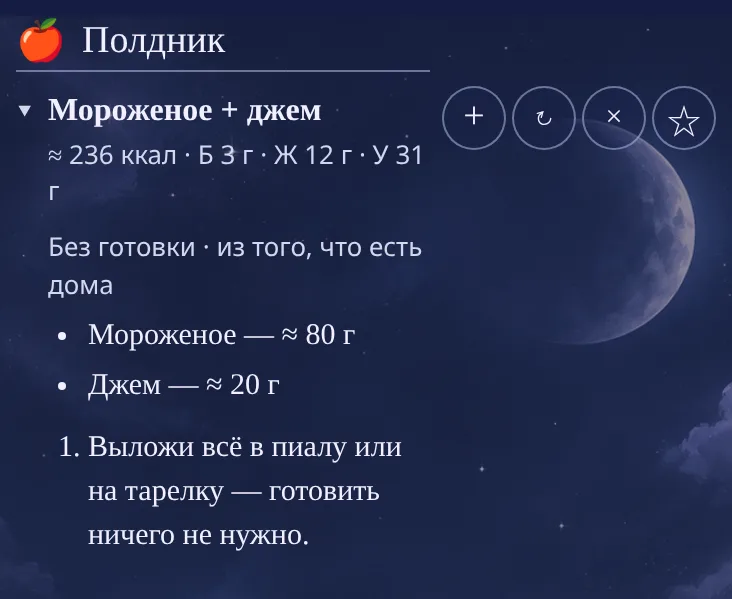
Очень многим блюдам не хватает только лука или чеснока. Пока галочка стоит, приложение предлагает и такие блюда — примерно одно из трёх — и пишет под названием «докупить: лук».
Совсем не хочется в магазин — сними галочку, и в меню останется только то, что можно приготовить прямо сейчас.
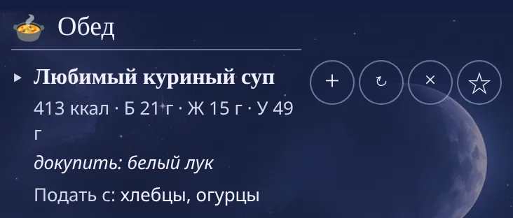
Вверху меню переключи «Из того, что есть» → «Готова докупить» и впиши в блок «Готова докупить» продукты, за которыми готова сходить. Тогда в меню попадут блюда и с ними, а под названием будет видно, что именно купить.
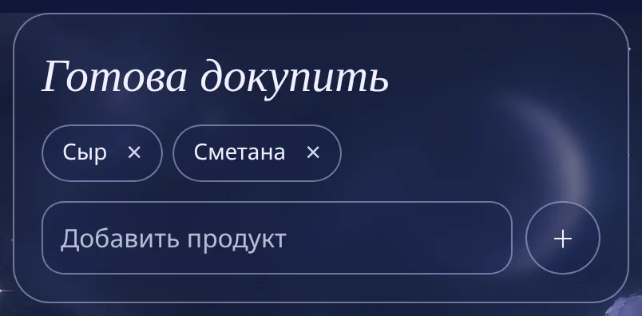
Внизу меню — свёрнутый блок «Что ещё можно приготовить, если докупить продукты»: блюда, которым не хватает одного-двух продуктов.
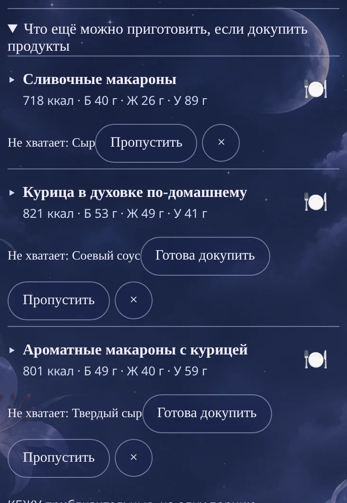
Здесь продукты, которые нельзя или не хочется. У каждого — два режима:
Режим выбирается в списке над полем ввода, а у уже добавленного продукта — кнопкой «Совсем» / «Только блюда». «Вернуть» убирает исключение.
Ниже, под «Не предлагать рецепты», — всё, что ты скрыла крестиком ×. Любое блюдо можно вернуть.
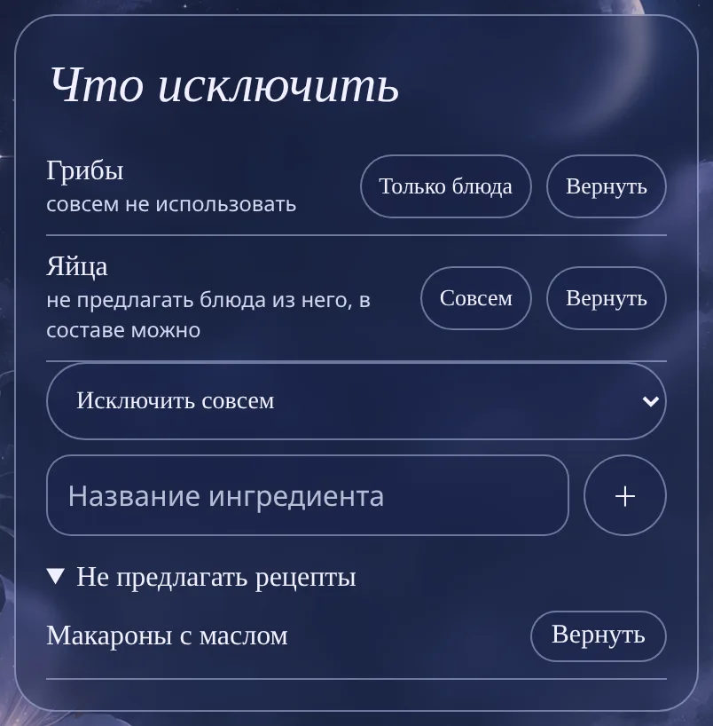
Каждое нажатие + у блюда в меню добавляет его сюда, а сверху считается сумма КБЖУ за день. Съела две порции — нажми + два раза. Ошиблась — нажми «Отменить» у нужной строки.
Новый день начинается с чистого листа, прошлые дни сохраняются в браузере.
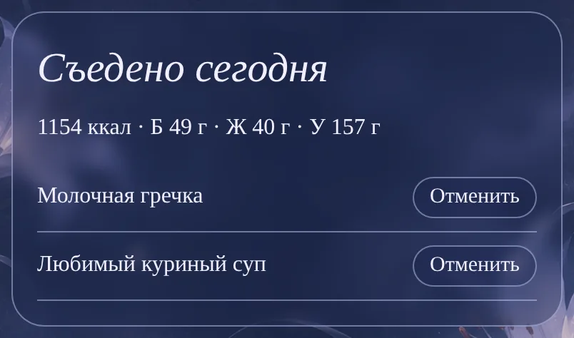
Понравилось блюдо — нажми ☆ справа от него. Звёздочка станет жёлтой, а рецепт целиком — продукты, шаги, КБЖУ и ссылка — сохранится, даже если в меню он больше не попадётся. Сохранять можно и основное блюдо, и гарнир, и перекус.
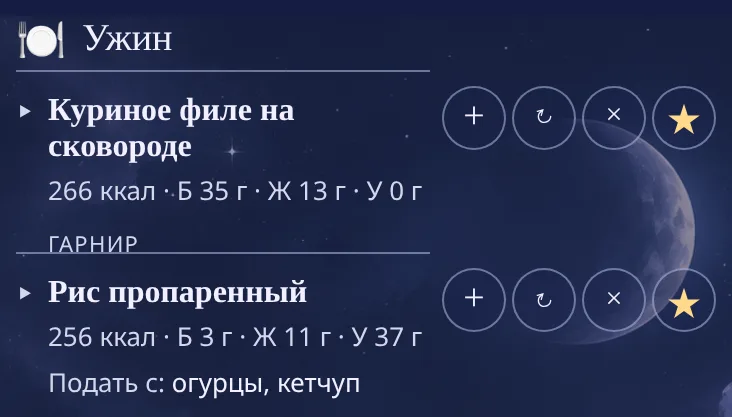
Найти их — в разделе ✧ Созвездия → Коллекции: нажми «✦ Рецепты» (цифра рядом — сколько сохранено).
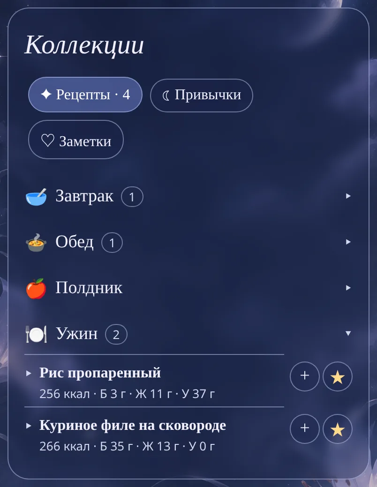
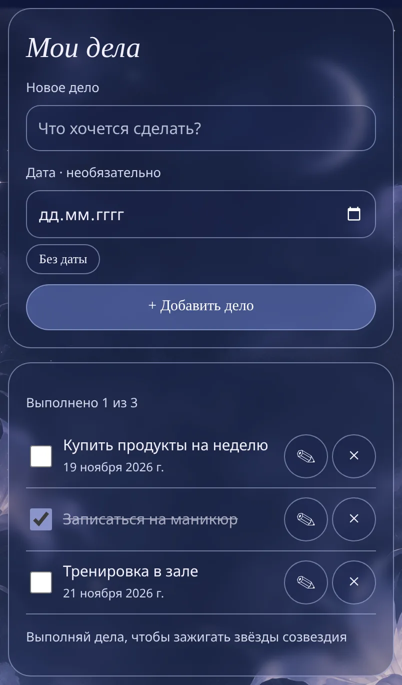
Каждый день — звёздочка. Стрелки ‹ › листают месяцы, «Сегодня» возвращает к текущему дню.
Нажми на день, и ниже можно:
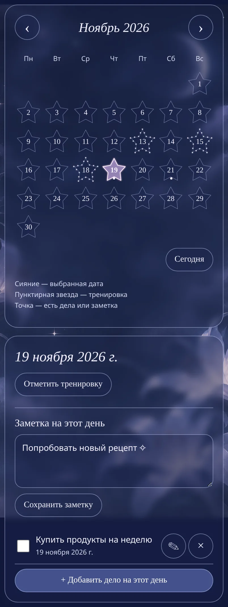
Созвездие из пяти звёзд. Звёзды зажигаются за выполненные дела, а ещё можно добавить звёздочку вручную — кнопкой «✧ Добавить звёздочку», просто так, за хороший день.
Ниже — Коллекции. В «✦ Рецепты» лежат сохранённые рецепты (подробнее), «Привычки» и «Заметки» пока только задуманы.
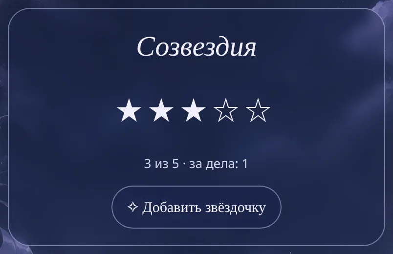
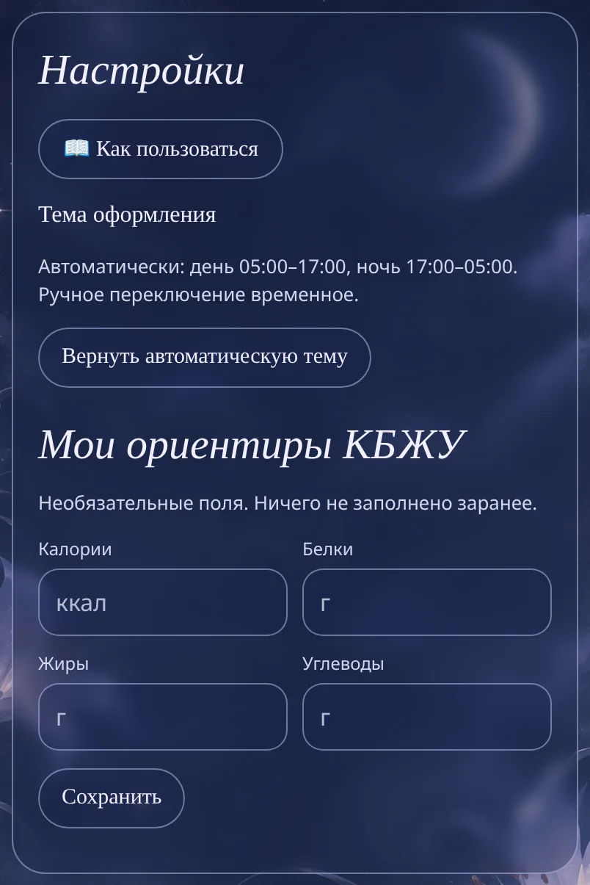